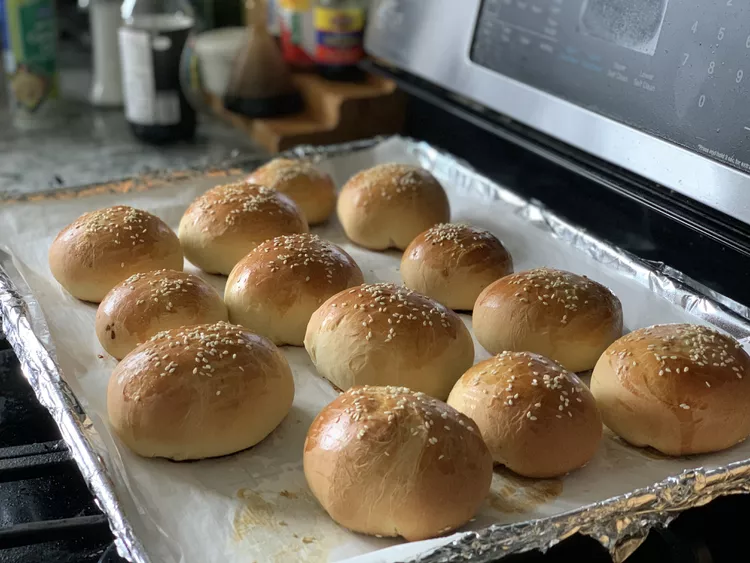

Chinese Sweet Bun Dough

Fill these sweet buns with a BBQ filling, or sweet bean paste, or get creative! After several experiments, I finally came up with the perfect dough — it's a cross between bread and pastry dough.
Ingredients
- ½ cup white sugar
- 1 cup warm milk (110 degrees F/45 degrees C)
- 1 tablespoon active dry yeast
- 4 cups bread flour
- 2 eggs, beaten (divided)
- 6 tablespoons vegetable oil
- 2 teaspoons salt
- 2 teaspoons water
- 1 teaspoon sesame seeds for garnish (divided) (Optional)
Directions
- Whisk milk and sugar together in a large mixing bowl until sugar is dissolved. Stir in yeast, and let stand until a frothy layer forms on the milk, about 10 minutes. Stir in flour, most of the beaten eggs (reserve about 1 tablespoon of egg in a small bowl for later), vegetable oil, and salt; mix well until thoroughly combined.
- Turn dough out onto a well-floured work surface, and knead until smooth and elastic, about 10 minutes. The dough should be slightly sticky. Place the dough into a large oiled bowl, cover with a damp cloth or plastic wrap, place the bowl in a warm spot, and let rise until doubled, 2 to 3 hours.
- Line a baking sheet with parchment paper.
- Remove dough from the bowl, and knead it briefly to punch down, about 1 minute. Roll dough out into a rope, and cut it into 12 equal-sized pieces. Roll each piece into a ball, and use your fingers to flatten each ball into a disk about 5 to 6 inches in diameter.
- Place about 2 tablespoons of your favorite bun filling in the center of the dough circle, and bring the edges of dough up over the filling. Pinch and twist the top together to seal in filling. Make sure there are no open spots. Place each filled bun seam-side down on the parchment paper while you finish making the rest of the buns. Cover the filled buns with plastic wrap, and let them rise for 30 minutes.
- Preheat oven to 350 degrees F (175 degrees C). Beat reserved beaten egg with water until combined; brush the top of each bun with egg wash and sprinkle a few sesame seeds on top.
- Bake buns in the preheated oven until the tops are browned and shiny, turning the baking sheet around halfway through baking, for 20 to 30 minutes. Serve warm.
Home